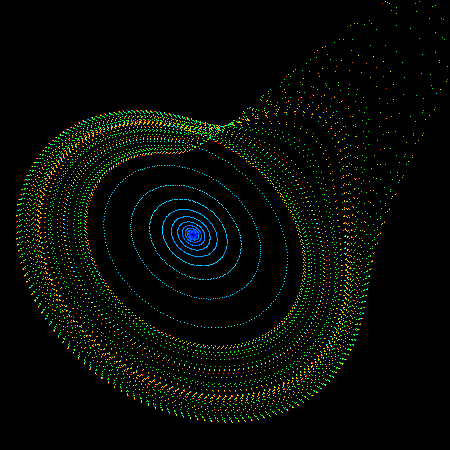
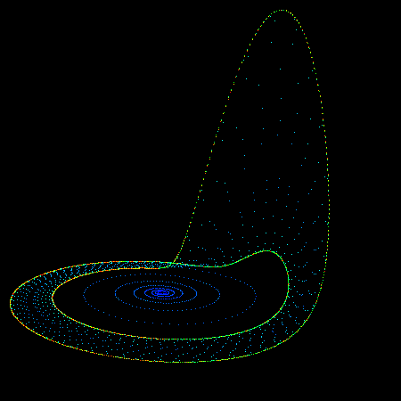
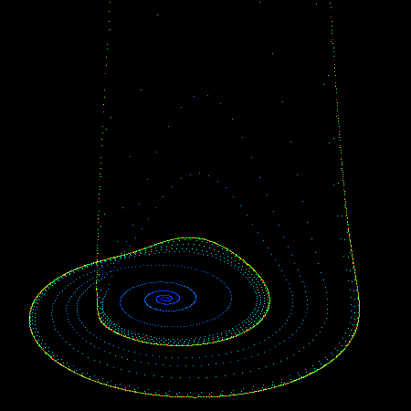

The so called "rossler" system is credited to Otto Rossler and arose from work in chemical kinetics. The system is described with 3 coupled non-linear differential equations dy / dt = x + a y dz / dt = b + z ( x - c ) where a = 0.2, b = 0.2, c = 5.7 The series does not form limit cycles nor does it ever reach a steady state. Instead it is an example of deterministic chaos. As with other chaotic systems the Rossler system is sensitive to the initial conditions, two initial states no matter how close will diverge, usually sooner rather than later. While the equations look simple enough they lead to wonderful trajectories, some examples of which are illustrated below.    PovRay 3.5 macro supplied by Marcus Fritzsch.
// N = number iterations
// h, a, b, c: initial parameters
// x0, y0, z0: start-location
// rad = radius of the spheres that trace the attractor
#macro roessler(h, a, b, c, x0, y0, z0, N, rad)
// use it like:
// roessler(0.015, 0.2, 0.2, 5.7, 0.0001, 0.0001, 0.0001, 350000, .025)
#local i = 0;
union {
#while (i < N)
#local x0 = x0 + h * (-y0 -z0);
#local y0 = y0 + h * (x0 + a * y0);
#local z0 = z0 + h * (b + z0 * (x0 - c));
#if (i > 100)
sphere {
<x0,y0,z0>, rad
pigment { rgb <i/N,i/N,1> }
finish { reflection .5 phong .7 }
}
#end
#local i = i + 1;
#end
}
#end
The following is a short piece of simple C code to illustrate how one might create the attractors shown here.
double h = 0.05; /* or smaller */
double a = 0.2;
double b = 0.2;
double c = 5.7;
XYZ p,plast = {0.1,0,0};
for (i=0;i<1000000;i++) {
p.x = plast.x + h * (- plast.y - plast.z);
p.y = plast.y + h * (plast.x + a * plast.y);
p.z = plast.z + h * (b + plast.z * (plast.x - c));
if (i > 100)
Draw the point p
plast = p
}
|